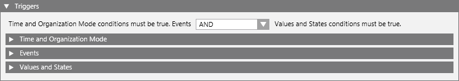

Configure the Input Triggers of the Reaction
You must configure at least one input trigger for the reaction—otherwise it will never execute.
NOTE: In distributed systems, if the reaction works across multiple systems, configure it on the system where the initiating condition occurs so that the trigger is local. You can then configure the output to happen on other systems. For details, see Reactions in Distributed Systems.
- In the Reaction Editor tab, open the Triggers expander. Here you can configure in what situations you want the reaction to execute. For details, see Input Triggers of a Reaction. Do one or more of the following:
- In the Time and Organization Mode expander, you can specify any time-dependent pre-conditions of the reaction. For details, see Time and Organization Mode Conditions.
- In the Events expander you can specify the combination of events that will trigger the reaction. For details, see Events Conditions.
- In the Values and States expander, you can and specify the field conditions that will trigger the reaction. For details, see Values and States Conditions.
- Use the AND/OR drop-down list at the top to specify the Boolean logic between the triggers: Time and Organization Mode conditions must be true. Events AND/OR Values and States conditions must be true.
